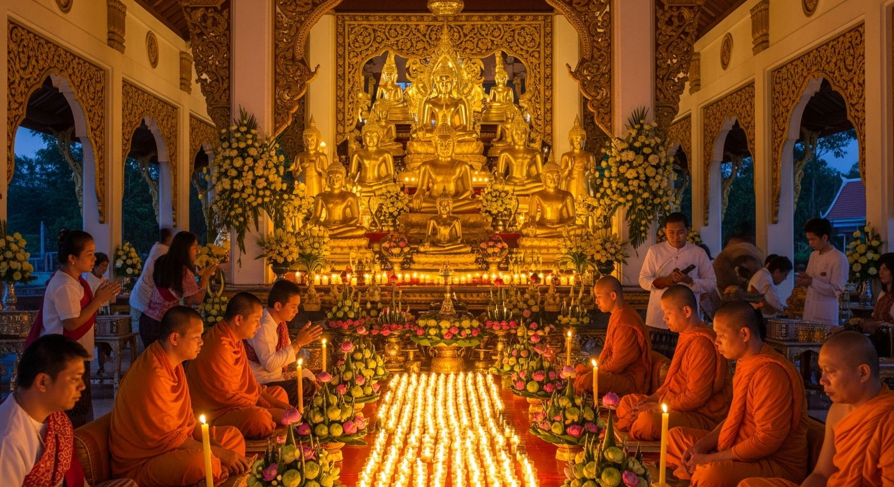

28
Mar 2026
Complimentary Burmese Food Fair
Enjoyed authentic Burmese cuisine and cultural celebration with the community.
Upcoming Event

On 25th April 2026 (Saturday) Theravada Buddha Sasana Organization (TBSO) will celebrate Vesak Day or Buddha Day memorial that occurred four-fold significant events as follows. All of you are cordially invited to participate in honoring the Buddha by observing his virtues in his great compassion, his wisdom, and his purity as an ideal way of living in harmony. So please come to TBSO (Dhamma Gone Yee Mahasi Sasana Yeiktha) to perform offering alms, observing precepts, chanting and pouring water over the Buddha statue altogether happily on that day and then sharing merit to all beings in the universe to be free from all kinds of suffering.
Enjoyed authentic Burmese cuisine and cultural celebration with the community.
Celebrated the traditional rice harvest with offerings, blessings, and community gathering.
Traditional robe-offering ceremony marking the end of the monastic rains retreat. Community members offered new robes and requisites to the monks, followed by blessings, chanting, and a shared meal.